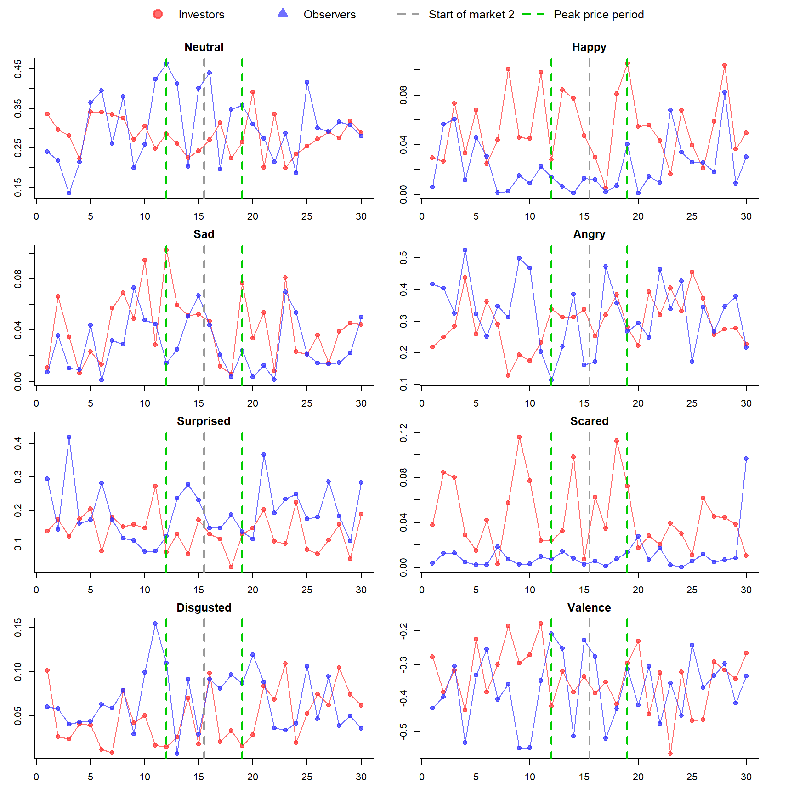
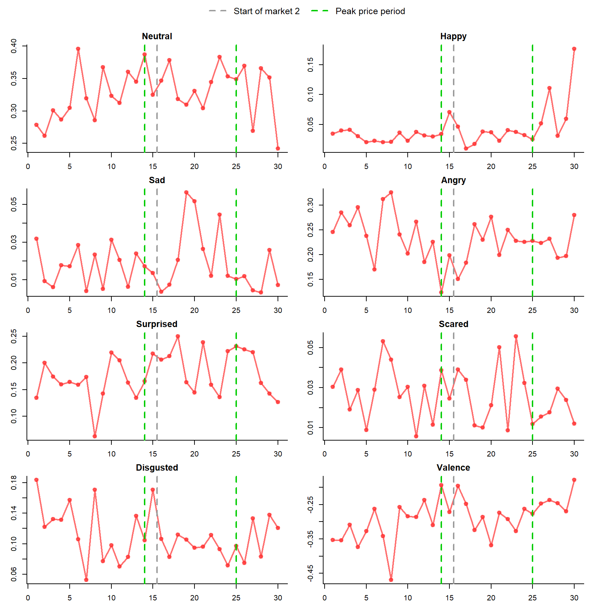
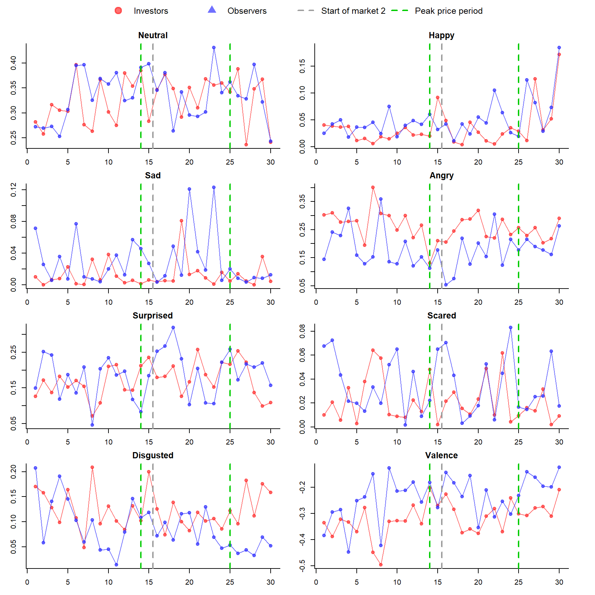

Emotions summary
1 All sessions
1.1 Emotions Mean and S.D
Mean and standard deviation of emotions across subjects and 10-s interbals (in the belief stage)
1.1.1 Mean - Markets 1+2
| Neutral | Happy | Sad | Angry | Surprised | Scared | Disgusted | Valence | |
|---|---|---|---|---|---|---|---|---|
| All Participates | 0.3466056 | 0.0405108 | 0.0317435 | 0.2160762 | 0.1839488 | 0.0222218 | 0.0843799 | -0.2734885 |
| Traders | 0.3439022 | 0.0405933 | 0.0290296 | 0.2170033 | 0.1855920 | 0.0243109 | 0.0709038 | -0.2639182 |
| Observers | 0.3498412 | 0.0404121 | 0.0349918 | 0.2149667 | 0.1819821 | 0.0197214 | 0.1005091 | -0.2849429 |
| P-Value | 0.4009751 | 0.9560097 | 0.0996731 | 0.8317180 | 0.6635763 | 0.0941123 | 0.0000002 | 0.0575647 |
1.1.2 S.D Markets 1+2
| Neutral | Happy | Sad | Angry | Surprised | Scared | Disgusted | Valence | |
|---|---|---|---|---|---|---|---|---|
| All Participates | 0.1927629 | 0.0891437 | 0.0973367 | 0.2599129 | 0.2252390 | 0.0752522 | 0.1518779 | 0.3009147 |
| Traders | 0.2010320 | 0.0909550 | 0.0945206 | 0.2645759 | 0.2301560 | 0.0808348 | 0.1450405 | 0.3090154 |
| Observers | 0.1823956 | 0.0869599 | 0.1005428 | 0.2543135 | 0.2192786 | 0.0679160 | 0.1582290 | 0.2906233 |
1.1.3 Mean - Markets 1
| Neutral | Happy | Sad | Angry | Surprised | Scared | Disgusted | Valence | |
|---|---|---|---|---|---|---|---|---|
| All Participates | 0.3565408 | 0.0383059 | 0.0336783 | 0.2135073 | 0.1728585 | 0.0182477 | 0.0834961 | -0.2705218 |
| Traders | 0.3534828 | 0.0365816 | 0.0319280 | 0.2149331 | 0.1785640 | 0.0207150 | 0.0689413 | -0.2632685 |
| Observers | 0.3601895 | 0.0403632 | 0.0357668 | 0.2118061 | 0.1660510 | 0.0153039 | 0.1008623 | -0.2791763 |
| P-Value | 0.5119023 | 0.4079075 | 0.4712094 | 0.8170627 | 0.2561512 | 0.0896701 | 0.0000771 | 0.3057801 |
1.1.4 S.D Markets 1
| Neutral | Happy | Sad | Angry | Surprised | Scared | Disgusted | Valence | |
|---|---|---|---|---|---|---|---|---|
| All Participates | 0.1973582 | 0.0872200 | 0.1021783 | 0.2602359 | 0.2127502 | 0.0617329 | 0.1533341 | 0.2987947 |
| Traders | 0.2063757 | 0.0862913 | 0.1035976 | 0.2689658 | 0.2225849 | 0.0653237 | 0.1446974 | 0.3072912 |
| Observers | 0.1861147 | 0.0883356 | 0.1004955 | 0.2496088 | 0.2003374 | 0.0570629 | 0.1614408 | 0.2883182 |
1.1.5 Mean - Markets 2
| Neutral | Happy | Sad | Angry | Surprised | Scared | Disgusted | Valence | |
|---|---|---|---|---|---|---|---|---|
| All Participates | 0.3366299 | 0.0427247 | 0.0298008 | 0.2186556 | 0.1950843 | 0.0262121 | 0.0852674 | -0.2764673 |
| Traders | 0.3343096 | 0.0446100 | 0.0261276 | 0.2190761 | 0.1926287 | 0.0279113 | 0.0728687 | -0.2645688 |
| Observers | 0.3394155 | 0.0404613 | 0.0342109 | 0.2181509 | 0.1980324 | 0.0241720 | 0.1001532 | -0.2907527 |
| P-Value | 0.6004443 | 0.3797253 | 0.0995757 | 0.9457712 | 0.6628934 | 0.4015388 | 0.0005669 | 0.0973197 |
1.1.6 S.D Markets 2
| Neutral | Happy | Sad | Angry | Surprised | Scared | Disgusted | Valence | |
|---|---|---|---|---|---|---|---|---|
| All Participates | 0.1875741 | 0.0910103 | 0.0922140 | 0.2596512 | 0.2366682 | 0.0865705 | 0.1504487 | 0.3031009 |
| Traders | 0.1951932 | 0.0952812 | 0.0844267 | 0.2602578 | 0.2374255 | 0.0937357 | 0.1454470 | 0.3109226 |
| Observers | 0.1781020 | 0.0856177 | 0.1006597 | 0.2591151 | 0.2358997 | 0.0771139 | 0.1550461 | 0.2930285 |
1.2 Difference Between Markets
1.2.1 All Participants
| Neutral | Happy | Sad | Angry | Surprised | Scared | Disgusted | Valence | |
|---|---|---|---|---|---|---|---|---|
| Market 1 | 0.3565408 | 0.0383059 | 0.0336783 | 0.2135073 | 0.1728585 | 0.0182477 | 0.0834961 | -0.2705218 |
| Market 2 | 0.3366299 | 0.0427247 | 0.0298008 | 0.2186556 | 0.1950843 | 0.0262121 | 0.0852674 | -0.2764673 |
| P-Value | 0.0050372 | 0.1786236 | 0.2796313 | 0.5909667 | 0.0074003 | 0.0040874 | 0.7516695 | 0.5919140 |
1.2.2 Traders Only
| Neutral | Happy | Sad | Angry | Surprised | Scared | Disgusted | Valence | |
|---|---|---|---|---|---|---|---|---|
| Market 1 | 0.3534828 | 0.0365816 | 0.0319280 | 0.2149331 | 0.1785640 | 0.0207150 | 0.0689413 | -0.2632685 |
| Market 2 | 0.3343096 | 0.0446100 | 0.0261276 | 0.2190761 | 0.1926287 | 0.0279113 | 0.0728687 | -0.2645688 |
| P-Value | 0.0560416 | 0.0770563 | 0.2190361 | 0.7538766 | 0.2210421 | 0.0746203 | 0.5877018 | 0.9328561 |
1.2.3 Observers Only
| Neutral | Happy | Sad | Angry | Surprised | Scared | Disgusted | Valence | |
|---|---|---|---|---|---|---|---|---|
| Market 1 | 0.3601895 | 0.0403632 | 0.0357668 | 0.2118061 | 0.1660510 | 0.0153039 | 0.1008623 | -0.2791763 |
| Market 2 | 0.3394155 | 0.0404613 | 0.0342109 | 0.2181509 | 0.1980324 | 0.0241720 | 0.1001532 | -0.2907527 |
| P-Value | 0.0369560 | 0.9835318 | 0.7770327 | 0.6480303 | 0.0075675 | 0.0168884 | 0.9346299 | 0.4660333 |
1.3 Emotions Progression
1.3.1 All participants

1.3.2 Investors / Observers
2 Session 1
2.1 Emotions Mean and S.D
Mean and standard deviation of emotions across subjects and 10-s interbals (in the belief stage)
2.1.1 Mean - Markets 1+2
| Neutral | Happy | Sad | Angry | Surprised | Scared | Disgusted | Valence | |
|---|---|---|---|---|---|---|---|---|
| All Participates | 0.2900957 | 0.0422086 | 0.0371298 | 0.3066365 | 0.1589028 | 0.0327563 | 0.0556231 | -0.3512561 |
| Traders | 0.2823330 | 0.0534185 | 0.0419579 | 0.2966735 | 0.1373427 | 0.0451292 | 0.0490790 | -0.3389966 |
| Observers | 0.3037581 | 0.0224792 | 0.0286323 | 0.3241713 | 0.1968486 | 0.0109799 | 0.0671409 | -0.3728328 |
| P-Value | 0.2146046 | 0.0000499 | 0.1021957 | 0.3724834 | 0.0034906 | 0.0000009 | 0.0875800 | 0.2777406 |
2.1.2 S.D Markets 1+2
| Neutral | Happy | Sad | Angry | Surprised | Scared | Disgusted | Valence | |
|---|---|---|---|---|---|---|---|---|
| All Participates | 0.1648475 | 0.0880311 | 0.0916764 | 0.3057371 | 0.1843101 | 0.0857172 | 0.1019530 | 0.3209777 |
| Traders | 0.1596721 | 0.1014657 | 0.1052291 | 0.3118542 | 0.1605126 | 0.1026611 | 0.0998942 | 0.3414002 |
| Observers | 0.1732827 | 0.0518978 | 0.0603044 | 0.2948707 | 0.2154283 | 0.0318455 | 0.1048247 | 0.2812576 |
2.1.3 Mean - Markets 1
| Neutral | Happy | Sad | Angry | Surprised | Scared | Disgusted | Valence | |
|---|---|---|---|---|---|---|---|---|
| All Participates | 0.2945017 | 0.0422435 | 0.0424158 | 0.2952505 | 0.1663634 | 0.0334797 | 0.0474573 | -0.3362339 |
| Traders | 0.2883873 | 0.0550481 | 0.0479343 | 0.2752105 | 0.1508605 | 0.0482573 | 0.0377923 | -0.3132336 |
| Observers | 0.3052631 | 0.0197075 | 0.0327032 | 0.3305208 | 0.1936487 | 0.0074712 | 0.0644679 | -0.3767145 |
| P-Value | 0.4814707 | 0.0010817 | 0.2231740 | 0.1865220 | 0.1296485 | 0.0000578 | 0.0510091 | 0.1348762 |
2.1.4 S.D Markets 1
| Neutral | Happy | Sad | Angry | Surprised | Scared | Disgusted | Valence | |
|---|---|---|---|---|---|---|---|---|
| All Participates | 0.1651179 | 0.0904906 | 0.1005023 | 0.2990400 | 0.1848511 | 0.0913998 | 0.0856443 | 0.3158020 |
| Traders | 0.1652299 | 0.1058937 | 0.1164950 | 0.3113447 | 0.1703899 | 0.1114748 | 0.0720190 | 0.3424623 |
| Observers | 0.1654774 | 0.0462284 | 0.0627996 | 0.2745186 | 0.2062589 | 0.0134865 | 0.1038127 | 0.2596281 |
2.1.5 Mean - Markets 2
| Neutral | Happy | Sad | Angry | Surprised | Scared | Disgusted | Valence | |
|---|---|---|---|---|---|---|---|---|
| All Participates | 0.2856897 | 0.0421737 | 0.0318438 | 0.3180226 | 0.1514422 | 0.0320328 | 0.0637889 | -0.3662783 |
| Traders | 0.2762786 | 0.0517890 | 0.0359816 | 0.3181366 | 0.1238250 | 0.0420011 | 0.0603656 | -0.3647595 |
| Observers | 0.3022532 | 0.0252509 | 0.0245613 | 0.3178218 | 0.2000485 | 0.0144885 | 0.0698138 | -0.3689512 |
| P-Value | 0.2992683 | 0.0142308 | 0.2767552 | 0.9944832 | 0.0100664 | 0.0042498 | 0.5599222 | 0.9272052 |
2.1.6 S.D Markets 2
| Neutral | Happy | Sad | Angry | Surprised | Scared | Disgusted | Valence | |
|---|---|---|---|---|---|---|---|---|
| All Participates | 0.1648586 | 0.0857206 | 0.0818110 | 0.3125997 | 0.1839118 | 0.0798472 | 0.1156301 | 0.3261428 |
| Traders | 0.1543055 | 0.0972128 | 0.0926703 | 0.3120651 | 0.1494131 | 0.0933419 | 0.1207909 | 0.3396763 |
| Observers | 0.1818576 | 0.0571885 | 0.0578359 | 0.3156426 | 0.2255712 | 0.0428385 | 0.1064583 | 0.3030568 |
2.2 Difference Between Markets
2.2.1 All Participants
| Neutral | Happy | Sad | Angry | Surprised | Scared | Disgusted | Valence | |
|---|---|---|---|---|---|---|---|---|
| Market 1 | 0.2945017 | 0.0422435 | 0.0424158 | 0.2952505 | 0.1663634 | 0.0334797 | 0.0474573 | -0.3362339 |
| Market 2 | 0.2856897 | 0.0421737 | 0.0318438 | 0.3180226 | 0.1514422 | 0.0320328 | 0.0637889 | -0.3662783 |
| P-Value | 0.5871721 | 0.9935767 | 0.2412087 | 0.4492694 | 0.4108152 | 0.8638913 | 0.1033088 | 0.3415757 |
2.2.2 Traders Only
| Neutral | Happy | Sad | Angry | Surprised | Scared | Disgusted | Valence | |
|---|---|---|---|---|---|---|---|---|
| Market 1 | 0.2883873 | 0.0550481 | 0.0479343 | 0.2752105 | 0.1508605 | 0.0482573 | 0.0377923 | -0.3132336 |
| Market 2 | 0.2762786 | 0.0517890 | 0.0359816 | 0.3181366 | 0.1238250 | 0.0420011 | 0.0603656 | -0.3647595 |
| P-Value | 0.5388568 | 0.7946965 | 0.3571418 | 0.2642528 | 0.1716821 | 0.6214745 | 0.0665423 | 0.2208104 |
2.2.3 Observers Only
| Neutral | Happy | Sad | Angry | Surprised | Scared | Disgusted | Valence | |
|---|---|---|---|---|---|---|---|---|
| Market 1 | 0.3052631 | 0.0197075 | 0.0327032 | 0.3305208 | 0.1936487 | 0.0074712 | 0.0644679 | -0.3767145 |
| Market 2 | 0.3022532 | 0.0252509 | 0.0245613 | 0.3178218 | 0.2000485 | 0.0144885 | 0.0698138 | -0.3689512 |
| P-Value | 0.9157160 | 0.5149165 | 0.4102015 | 0.7929990 | 0.8563592 | 0.1794561 | 0.7559700 | 0.8664449 |
2.3 Emotions Progression
2.3.1 All participants
2.3.2 Investors / Observers

3 Session 2
3.1 Emotions Mean and S.D
Mean and standard deviation of emotions across subjects and 10-s interbals (in the belief stage)
3.1.1 Mean - Markets 1+2
| Neutral | Happy | Sad | Angry | Surprised | Scared | Disgusted | Valence | |
|---|---|---|---|---|---|---|---|---|
| All Participates | 0.3289731 | 0.0411560 | 0.0184228 | 0.2314154 | 0.1770429 | 0.0263516 | 0.1105404 | -0.2889673 |
| Traders | 0.3260920 | 0.0357870 | 0.0121362 | 0.2595930 | 0.1717436 | 0.0216449 | 0.1235249 | -0.3177829 |
| Observers | 0.3341399 | 0.0507843 | 0.0296967 | 0.1808835 | 0.1865465 | 0.0347923 | 0.0872549 | -0.2372913 |
| P-Value | 0.5881602 | 0.0880382 | 0.0203710 | 0.0003292 | 0.4035570 | 0.0611507 | 0.0198560 | 0.0022106 |
3.1.2 S.D Markets 1+2
| Neutral | Happy | Sad | Angry | Surprised | Scared | Disgusted | Valence | |
|---|---|---|---|---|---|---|---|---|
| All Participates | 0.1533517 | 0.0834725 | 0.0671472 | 0.2231350 | 0.1721872 | 0.0677800 | 0.1538847 | 0.2661394 |
| Traders | 0.1627180 | 0.0797246 | 0.0565613 | 0.2290005 | 0.1704490 | 0.0661921 | 0.1543750 | 0.2727897 |
| Observers | 0.1353070 | 0.0892703 | 0.0818239 | 0.2033453 | 0.1754338 | 0.0699707 | 0.1507228 | 0.2463163 |
3.1.3 Mean - Markets 1
| Neutral | Happy | Sad | Angry | Surprised | Scared | Disgusted | Valence | |
|---|---|---|---|---|---|---|---|---|
| All Participates | 0.3235760 | 0.0330535 | 0.0169792 | 0.2386292 | 0.1647440 | 0.0279000 | 0.1197989 | -0.3089510 |
| Traders | 0.3165089 | 0.0293715 | 0.0099309 | 0.2687356 | 0.1619407 | 0.0229431 | 0.1285714 | -0.3356699 |
| Observers | 0.3362026 | 0.0396321 | 0.0295722 | 0.1848393 | 0.1697526 | 0.0367564 | 0.1041255 | -0.2612131 |
| P-Value | 0.3558604 | 0.2730982 | 0.0231357 | 0.0053768 | 0.7338306 | 0.1931660 | 0.3279847 | 0.0369047 |
3.1.4 S.D Markets 1
| Neutral | Happy | Sad | Angry | Surprised | Scared | Disgusted | Valence | |
|---|---|---|---|---|---|---|---|---|
| All Participates | 0.1521748 | 0.0623132 | 0.0529755 | 0.2190025 | 0.1621517 | 0.0741258 | 0.1699899 | 0.2534256 |
| Traders | 0.1580194 | 0.0591131 | 0.0420455 | 0.2270600 | 0.1667594 | 0.0748901 | 0.1664921 | 0.2589523 |
| Observers | 0.1412785 | 0.0675675 | 0.0667852 | 0.1938472 | 0.1545478 | 0.0723893 | 0.1761082 | 0.2374877 |
3.1.5 Mean - Markets 2
| Neutral | Happy | Sad | Angry | Surprised | Scared | Disgusted | Valence | |
|---|---|---|---|---|---|---|---|---|
| All Participates | 0.3343445 | 0.0492199 | 0.0198595 | 0.2242358 | 0.1892833 | 0.0248106 | 0.1013259 | -0.2690788 |
| Traders | 0.3356042 | 0.0421551 | 0.0143252 | 0.2505181 | 0.1814738 | 0.0203564 | 0.1185157 | -0.3000284 |
| Observers | 0.3320771 | 0.0619365 | 0.0298212 | 0.1769278 | 0.2033404 | 0.0328282 | 0.0703842 | -0.2133696 |
| P-Value | 0.8655248 | 0.1820654 | 0.2151518 | 0.0215207 | 0.4180221 | 0.1787512 | 0.0095681 | 0.0248959 |
3.1.6 S.D Markets 2
| Neutral | Happy | Sad | Angry | Surprised | Scared | Disgusted | Valence | |
|---|---|---|---|---|---|---|---|---|
| All Participates | 0.1546901 | 0.0996994 | 0.0788692 | 0.2274687 | 0.1811840 | 0.0609519 | 0.1357632 | 0.2773921 |
| Traders | 0.1672947 | 0.0957169 | 0.0680737 | 0.2313966 | 0.1741064 | 0.0565044 | 0.1417737 | 0.2857185 |
| Observers | 0.1299814 | 0.1059651 | 0.0949763 | 0.2136561 | 0.1936833 | 0.0678965 | 0.1189567 | 0.2541711 |
3.2 Difference Between Markets
3.2.1 All Participants
| Neutral | Happy | Sad | Angry | Surprised | Scared | Disgusted | Valence | |
|---|---|---|---|---|---|---|---|---|
| Market 1 | 0.3235760 | 0.0330535 | 0.0169792 | 0.2386292 | 0.1647440 | 0.0279000 | 0.1197989 | -0.3089510 |
| Market 2 | 0.3343445 | 0.0492199 | 0.0198595 | 0.2242358 | 0.1892833 | 0.0248106 | 0.1013259 | -0.2690788 |
| P-Value | 0.4729721 | 0.0472260 | 0.6609297 | 0.5097411 | 0.1447856 | 0.6415781 | 0.2199045 | 0.1252645 |
3.2.2 Traders Only
| Neutral | Happy | Sad | Angry | Surprised | Scared | Disgusted | Valence | |
|---|---|---|---|---|---|---|---|---|
| Market 1 | 0.3165089 | 0.0293715 | 0.0099309 | 0.2687356 | 0.1619407 | 0.0229431 | 0.1285714 | -0.3356699 |
| Market 2 | 0.3356042 | 0.0421551 | 0.0143252 | 0.2505181 | 0.1814738 | 0.0203564 | 0.1185157 | -0.3000284 |
| P-Value | 0.3367095 | 0.1885415 | 0.5244773 | 0.5151437 | 0.3482141 | 0.7495382 | 0.5943971 | 0.2846336 |
3.2.3 Observers Only
| Neutral | Happy | Sad | Angry | Surprised | Scared | Disgusted | Valence | |
|---|---|---|---|---|---|---|---|---|
| Market 1 | 0.3362026 | 0.0396321 | 0.0295722 | 0.1848393 | 0.1697526 | 0.0367564 | 0.1041255 | -0.2612131 |
| Market 2 | 0.3320771 | 0.0619365 | 0.0298212 | 0.1769278 | 0.2033404 | 0.0328282 | 0.0703842 | -0.2133696 |
| P-Value | 0.8526188 | 0.1268057 | 0.9852091 | 0.8126016 | 0.2424092 | 0.7322603 | 0.1715090 | 0.2355224 |
3.3 Emotions Progression
3.3.1 All participants

3.3.2 Investors / Observers

4 Session 3
4.1 Emotions Mean and S.D
Mean and standard deviation of emotions across subjects and 10-s interbals (in the belief stage)
4.1.1 Mean - Markets 1+2
| Neutral | Happy | Sad | Angry | Surprised | Scared | Disgusted | Valence | |
|---|---|---|---|---|---|---|---|---|
| All Participates | 0.3358804 | 0.0248924 | 0.0086161 | 0.2409808 | 0.1599042 | 0.0248074 | 0.1408323 | -0.3421171 |
| Traders | 0.3034820 | 0.0195275 | 0.0094807 | 0.2324164 | 0.2069547 | 0.0161348 | 0.1318994 | -0.3335790 |
| Observers | 0.3770726 | 0.0317135 | 0.0075167 | 0.2518698 | 0.1000828 | 0.0358341 | 0.1521898 | -0.3529728 |
| P-Value | 0.0001949 | 0.0542046 | 0.3688082 | 0.4167480 | 0.0000001 | 0.0208508 | 0.3236916 | 0.4761970 |
4.1.2 S.D Markets 1+2
| Neutral | Happy | Sad | Angry | Surprised | Scared | Disgusted | Valence | |
|---|---|---|---|---|---|---|---|---|
| All Participates | 0.2181844 | 0.0703702 | 0.0237080 | 0.2612613 | 0.2327419 | 0.0857970 | 0.2274259 | 0.2982187 |
| Traders | 0.2255415 | 0.0761905 | 0.0238674 | 0.2681251 | 0.2763674 | 0.0546578 | 0.2441606 | 0.3108174 |
| Observers | 0.2015725 | 0.0616965 | 0.0235145 | 0.2524810 | 0.1404876 | 0.1128918 | 0.2041918 | 0.2817493 |
4.1.3 Mean - Markets 1
| Neutral | Happy | Sad | Angry | Surprised | Scared | Disgusted | Valence | |
|---|---|---|---|---|---|---|---|---|
| All Participates | 0.3476158 | 0.0266477 | 0.0070956 | 0.2498622 | 0.1325169 | 0.0195560 | 0.1476813 | -0.3531832 |
| Traders | 0.3115153 | 0.0222621 | 0.0088213 | 0.2516286 | 0.1829696 | 0.0147902 | 0.1351264 | -0.3539860 |
| Observers | 0.3933430 | 0.0322028 | 0.0049096 | 0.2476248 | 0.0686101 | 0.0255927 | 0.1635842 | -0.3521663 |
| P-Value | 0.0043106 | 0.3177716 | 0.0752790 | 0.9104055 | 0.0000020 | 0.3373817 | 0.3498903 | 0.9634943 |
4.1.4 S.D Markets 1
| Neutral | Happy | Sad | Angry | Surprised | Scared | Disgusted | Valence | |
|---|---|---|---|---|---|---|---|---|
| All Participates | 0.2232980 | 0.0800547 | 0.0175687 | 0.2743278 | 0.2022843 | 0.0784853 | 0.2355045 | 0.3049884 |
| Traders | 0.2294572 | 0.0935556 | 0.0199797 | 0.2845606 | 0.2466954 | 0.0398028 | 0.2459351 | 0.3108369 |
| Observers | 0.2074230 | 0.0586488 | 0.0137147 | 0.2621291 | 0.0928746 | 0.1093660 | 0.2217320 | 0.2988965 |
4.1.5 Mean - Markets 2
| Neutral | Happy | Sad | Angry | Surprised | Scared | Disgusted | Valence | |
|---|---|---|---|---|---|---|---|---|
| All Participates | 0.3241941 | 0.0231445 | 0.0101302 | 0.2321365 | 0.1871768 | 0.0300369 | 0.1340119 | -0.3310973 |
| Traders | 0.2955085 | 0.0168133 | 0.0101352 | 0.2133476 | 0.2307608 | 0.0174693 | 0.1286965 | -0.3133242 |
| Observers | 0.3608023 | 0.0312242 | 0.0101237 | 0.2561147 | 0.1315554 | 0.0460756 | 0.1407953 | -0.3537793 |
| P-Value | 0.0165137 | 0.0682420 | 0.9975697 | 0.1846657 | 0.0015464 | 0.0254742 | 0.6629968 | 0.2787413 |
4.1.6 S.D Markets 2
| Neutral | Happy | Sad | Angry | Surprised | Scared | Disgusted | Valence | |
|---|---|---|---|---|---|---|---|---|
| All Participates | 0.2127945 | 0.0592954 | 0.0284984 | 0.2478265 | 0.2570868 | 0.0923750 | 0.2193675 | 0.2915429 |
| Traders | 0.2221590 | 0.0539281 | 0.0272443 | 0.2503614 | 0.3020109 | 0.0663250 | 0.2432667 | 0.3106316 |
| Observers | 0.1951788 | 0.0648796 | 0.0301556 | 0.2436355 | 0.1704039 | 0.1159263 | 0.1853706 | 0.2649305 |
4.2 Difference Between Markets
4.2.1 All Participants
| Neutral | Happy | Sad | Angry | Surprised | Scared | Disgusted | Valence | |
|---|---|---|---|---|---|---|---|---|
| Market 1 | 0.3476158 | 0.0266477 | 0.0070956 | 0.2498622 | 0.1325169 | 0.0195560 | 0.1476813 | -0.3531832 |
| Market 2 | 0.3241941 | 0.0231445 | 0.0101302 | 0.2321365 | 0.1871768 | 0.0300369 | 0.1340119 | -0.3310973 |
| P-Value | 0.2415454 | 0.5874704 | 0.1621463 | 0.4594354 | 0.0101639 | 0.1823521 | 0.5122310 | 0.4192851 |
4.2.2 Traders Only
| Neutral | Happy | Sad | Angry | Surprised | Scared | Disgusted | Valence | |
|---|---|---|---|---|---|---|---|---|
| Market 1 | 0.3115153 | 0.0222621 | 0.0088213 | 0.2516286 | 0.1829696 | 0.0147902 | 0.1351264 | -0.3539860 |
| Market 2 | 0.2955085 | 0.0168133 | 0.0101352 | 0.2133476 | 0.2307608 | 0.0174693 | 0.1286965 | -0.3133242 |
| P-Value | 0.5630576 | 0.5608787 | 0.6534043 | 0.2444025 | 0.1578373 | 0.6891526 | 0.8301186 | 0.2859955 |
4.2.3 Observers Only
| Neutral | Happy | Sad | Angry | Surprised | Scared | Disgusted | Valence | |
|---|---|---|---|---|---|---|---|---|
| Market 1 | 0.3933430 | 0.0322028 | 0.0049096 | 0.2476248 | 0.0686101 | 0.0255927 | 0.1635842 | -0.3521663 |
| Market 2 | 0.3608023 | 0.0312242 | 0.0101237 | 0.2561147 | 0.1315554 | 0.0460756 | 0.1407953 | -0.3537793 |
| P-Value | 0.2430489 | 0.9088286 | 0.1089572 | 0.8081728 | 0.0011007 | 0.1893078 | 0.4200527 | 0.9670313 |
4.3 Emotions Progression
4.3.1 All participants
4.3.2 Investors / Observers
5 Session 4
5.1 Emotions Mean and S.D
Mean and standard deviation of emotions across subjects and 10-s interbals (in the belief stage)
5.1.1 Mean - Markets 1+2
| Neutral | Happy | Sad | Angry | Surprised | Scared | Disgusted | Valence | |
|---|---|---|---|---|---|---|---|---|
| All Participates | 0.3666424 | 0.0414484 | 0.0279668 | 0.1814593 | 0.1962142 | 0.0222718 | 0.0743059 | -0.2286113 |
| Traders | 0.3878293 | 0.0215841 | 0.0294123 | 0.1793795 | 0.2337623 | 0.0318266 | 0.0271927 | -0.2260232 |
| Observers | 0.3452973 | 0.0614609 | 0.0265106 | 0.1835546 | 0.1583859 | 0.0126456 | 0.1217707 | -0.2312187 |
| P-Value | 0.0087005 | 0.0000022 | 0.6861436 | 0.8398657 | 0.0001457 | 0.0077034 | 0.0000000 | 0.8353004 |
5.1.2 S.D Markets 1+2
| Neutral | Happy | Sad | Angry | Surprised | Scared | Disgusted | Valence | |
|---|---|---|---|---|---|---|---|---|
| All Participates | 0.1884974 | 0.0977616 | 0.0832012 | 0.2392456 | 0.2314743 | 0.0836809 | 0.1343400 | 0.2892030 |
| Traders | 0.2135240 | 0.0538010 | 0.0879166 | 0.2325103 | 0.2653335 | 0.1120133 | 0.0634965 | 0.2609533 |
| Observers | 0.1568965 | 0.1245182 | 0.0783021 | 0.2462627 | 0.1843134 | 0.0354593 | 0.1665213 | 0.3155887 |
5.1.3 Mean - Markets 1
| Neutral | Happy | Sad | Angry | Surprised | Scared | Disgusted | Valence | |
|---|---|---|---|---|---|---|---|---|
| All Participates | 0.3727980 | 0.0515128 | 0.0301949 | 0.1621573 | 0.1944280 | 0.0151747 | 0.0678388 | -0.1909352 |
| Traders | 0.4119794 | 0.0229354 | 0.0305355 | 0.1684111 | 0.2101808 | 0.0183329 | 0.0322243 | -0.2055021 |
| Observers | 0.3333242 | 0.0803034 | 0.0298518 | 0.1558569 | 0.1785575 | 0.0119930 | 0.1037191 | -0.1762595 |
| P-Value | 0.0004381 | 0.0000637 | 0.9536332 | 0.6487361 | 0.2666374 | 0.2516003 | 0.0000037 | 0.4030003 |
5.1.4 S.D Markets 1
| Neutral | Happy | Sad | Angry | Surprised | Scared | Disgusted | Valence | |
|---|---|---|---|---|---|---|---|---|
| All Participates | 0.1850249 | 0.1178744 | 0.0961487 | 0.2254959 | 0.2332134 | 0.0453419 | 0.1274281 | 0.2859240 |
| Traders | 0.2108012 | 0.0618405 | 0.0953559 | 0.2360728 | 0.2536947 | 0.0567296 | 0.0715244 | 0.2581227 |
| Observers | 0.1452028 | 0.1499353 | 0.0972975 | 0.2150171 | 0.2103432 | 0.0296634 | 0.1580546 | 0.3117271 |
5.1.5 Mean - Markets 2
| Neutral | Happy | Sad | Angry | Surprised | Scared | Disgusted | Valence | |
|---|---|---|---|---|---|---|---|---|
| All Participates | 0.3604868 | 0.0313840 | 0.0257387 | 0.2007613 | 0.1980004 | 0.0293688 | 0.0807731 | -0.2662874 |
| Traders | 0.3636793 | 0.0202328 | 0.0282890 | 0.1903479 | 0.2573438 | 0.0453203 | 0.0221612 | -0.2465442 |
| Observers | 0.3572705 | 0.0426184 | 0.0231694 | 0.2112524 | 0.1382142 | 0.0132982 | 0.1398223 | -0.2861779 |
| P-Value | 0.7847513 | 0.0099056 | 0.5371059 | 0.4962506 | 0.0000176 | 0.0158336 | 0.0000000 | 0.2603100 |
5.1.6 S.D Markets 2
| Neutral | Happy | Sad | Angry | Surprised | Scared | Disgusted | Valence | |
|---|---|---|---|---|---|---|---|---|
| All Participates | 0.1920543 | 0.0710818 | 0.0679425 | 0.2511857 | 0.2301428 | 0.1089684 | 0.1408544 | 0.2880742 |
| Traders | 0.2142730 | 0.0445282 | 0.0801314 | 0.2292438 | 0.2754046 | 0.1469778 | 0.0541012 | 0.2631075 |
| Observers | 0.1674677 | 0.0890515 | 0.0530964 | 0.2719714 | 0.1520990 | 0.0405389 | 0.1732895 | 0.3109358 |
5.2 Difference Between Markets
5.2.1 All Participants
| Neutral | Happy | Sad | Angry | Surprised | Scared | Disgusted | Valence | |
|---|---|---|---|---|---|---|---|---|
| Market 1 | 0.3727980 | 0.0515128 | 0.0301949 | 0.1621573 | 0.1944280 | 0.0151747 | 0.0678388 | -0.1909352 |
| Market 2 | 0.3604868 | 0.0313840 | 0.0257387 | 0.2007613 | 0.1980004 | 0.0293688 | 0.0807731 | -0.2662874 |
| P-Value | 0.4492911 | 0.0168819 | 0.5350274 | 0.0612452 | 0.8581402 | 0.0493265 | 0.2645621 | 0.0024419 |
5.2.2 Traders Only
| Neutral | Happy | Sad | Angry | Surprised | Scared | Disgusted | Valence | |
|---|---|---|---|---|---|---|---|---|
| Market 1 | 0.4119794 | 0.0229354 | 0.0305355 | 0.1684111 | 0.2101808 | 0.0183329 | 0.0322243 | -0.2055021 |
| Market 2 | 0.3636793 | 0.0202328 | 0.0282890 | 0.1903479 | 0.2573438 | 0.0453203 | 0.0221612 | -0.2465442 |
| P-Value | 0.0629894 | 0.6806547 | 0.8341724 | 0.4392774 | 0.1445218 | 0.0481310 | 0.1935167 | 0.1968543 |
5.2.3 Observers Only
| Neutral | Happy | Sad | Angry | Surprised | Scared | Disgusted | Valence | |
|---|---|---|---|---|---|---|---|---|
| Market 1 | 0.3333242 | 0.0803034 | 0.0298518 | 0.1558569 | 0.1785575 | 0.0119930 | 0.1037191 | -0.1762595 |
| Market 2 | 0.3572705 | 0.0426184 | 0.0231694 | 0.2112524 | 0.1382142 | 0.0132982 | 0.1398223 | -0.2861779 |
| P-Value | 0.2121986 | 0.0131060 | 0.4860411 | 0.0655425 | 0.0732422 | 0.7638354 | 0.0759215 | 0.0041711 |
5.3 Emotions Progression
5.3.1 All participants
5.3.2 Investors / Observers
6 Session 5
6.1 Emotions Mean and S.D
Mean and standard deviation of emotions across subjects and 10-s interbals (in the belief stage)
6.1.1 Mean - Markets 1+2
| Neutral | Happy | Sad | Angry | Surprised | Scared | Disgusted | Valence | |
|---|---|---|---|---|---|---|---|---|
| All Participates | 0.3389261 | 0.0462962 | 0.0496745 | 0.2331282 | 0.1908804 | 0.0147004 | 0.0721525 | -0.2836720 |
| Traders | 0.3216970 | 0.0493437 | 0.0522344 | 0.2211485 | 0.1842136 | 0.0185638 | 0.0689103 | -0.2688431 |
| Observers | 0.3563496 | 0.0432142 | 0.0470858 | 0.2452430 | 0.1976224 | 0.0107934 | 0.0754313 | -0.2986682 |
| P-Value | 0.0470553 | 0.4656390 | 0.6802432 | 0.3440906 | 0.5199824 | 0.1686878 | 0.5803584 | 0.3083257 |
6.1.2 S.D Markets 1+2
| Neutral | Happy | Sad | Angry | Surprised | Scared | Disgusted | Valence | |
|---|---|---|---|---|---|---|---|---|
| All Participates | 0.2019510 | 0.0971653 | 0.1442866 | 0.2943469 | 0.2408167 | 0.0654477 | 0.1361289 | 0.3384044 |
| Traders | 0.2060477 | 0.1075109 | 0.1448122 | 0.3046939 | 0.2480877 | 0.0830959 | 0.1265001 | 0.3504936 |
| Observers | 0.1965748 | 0.0855354 | 0.1439795 | 0.2835588 | 0.2335074 | 0.0402228 | 0.1453856 | 0.3256965 |
6.1.3 Mean - Markets 1
| Neutral | Happy | Sad | Angry | Surprised | Scared | Disgusted | Valence | |
|---|---|---|---|---|---|---|---|---|
| All Participates | 0.3597638 | 0.0329433 | 0.0487602 | 0.2379497 | 0.1955097 | 0.0065562 | 0.0624133 | -0.2825456 |
| Traders | 0.3390076 | 0.0278997 | 0.0573782 | 0.2251517 | 0.1975171 | 0.0061983 | 0.0614955 | -0.2770965 |
| Observers | 0.3806748 | 0.0380246 | 0.0400779 | 0.2508433 | 0.1934873 | 0.0069168 | 0.0633379 | -0.2880352 |
| P-Value | 0.1156735 | 0.2052167 | 0.3155430 | 0.4799677 | 0.8929319 | 0.7521499 | 0.8999570 | 0.7843756 |
6.1.4 S.D Markets 1
| Neutral | Happy | Sad | Angry | Surprised | Scared | Disgusted | Valence | |
|---|---|---|---|---|---|---|---|---|
| All Participates | 0.2171177 | 0.0654413 | 0.1411998 | 0.2976669 | 0.2449805 | 0.0185881 | 0.1198382 | 0.3270289 |
| Traders | 0.2200046 | 0.0633652 | 0.1566558 | 0.3103698 | 0.2642664 | 0.0160556 | 0.1190661 | 0.3391446 |
| Observers | 0.2129442 | 0.0673227 | 0.1236839 | 0.2848790 | 0.2248628 | 0.0208865 | 0.1210509 | 0.3155307 |
6.1.5 Mean - Markets 2
| Neutral | Happy | Sad | Angry | Surprised | Scared | Disgusted | Valence | |
|---|---|---|---|---|---|---|---|---|
| All Participates | 0.3178535 | 0.0597996 | 0.0505992 | 0.2282523 | 0.1861988 | 0.0229365 | 0.0820016 | -0.2848112 |
| Traders | 0.3042571 | 0.0709477 | 0.0470522 | 0.2171155 | 0.1708108 | 0.0310217 | 0.0763803 | -0.2605280 |
| Observers | 0.3316558 | 0.0484825 | 0.0541999 | 0.2395579 | 0.2018200 | 0.0147287 | 0.0877080 | -0.3094623 |
| P-Value | 0.2234494 | 0.1254367 | 0.6941671 | 0.5308652 | 0.2868311 | 0.1398742 | 0.5408282 | 0.2549442 |
6.1.6 S.D Markets 2
| Neutral | Happy | Sad | Angry | Surprised | Scared | Disgusted | Valence | |
|---|---|---|---|---|---|---|---|---|
| All Participates | 0.1833678 | 0.1197065 | 0.1476030 | 0.2914307 | 0.2369010 | 0.0902585 | 0.1504142 | 0.3501463 |
| Traders | 0.1901926 | 0.1353095 | 0.1322007 | 0.2999774 | 0.2308637 | 0.1155093 | 0.1336033 | 0.3626516 |
| Observers | 0.1758152 | 0.1007129 | 0.1621803 | 0.2831833 | 0.2427542 | 0.0529047 | 0.1660708 | 0.3365606 |
6.2 Difference Between Markets
6.2.1 All Participants
| Neutral | Happy | Sad | Angry | Surprised | Scared | Disgusted | Valence | |
|---|---|---|---|---|---|---|---|---|
| Market 1 | 0.3597638 | 0.0329433 | 0.0487602 | 0.2379497 | 0.1955097 | 0.0065562 | 0.0624133 | -0.2825456 |
| Market 2 | 0.3178535 | 0.0597996 | 0.0505992 | 0.2282523 | 0.1861988 | 0.0229365 | 0.0820016 | -0.2848112 |
| P-Value | 0.0161631 | 0.0014091 | 0.8830079 | 0.7035407 | 0.6551370 | 0.0040236 | 0.0965720 | 0.9383942 |
6.2.2 Traders Only
| Neutral | Happy | Sad | Angry | Surprised | Scared | Disgusted | Valence | |
|---|---|---|---|---|---|---|---|---|
| Market 1 | 0.3390076 | 0.0278997 | 0.0573782 | 0.2251517 | 0.1975171 | 0.0061983 | 0.0614955 | -0.2770965 |
| Market 2 | 0.3042571 | 0.0709477 | 0.0470522 | 0.2171155 | 0.1708108 | 0.0310217 | 0.0763803 | -0.2605280 |
| P-Value | 0.1668749 | 0.0010189 | 0.5594614 | 0.8292077 | 0.3781213 | 0.0149609 | 0.3357347 | 0.6991075 |
6.2.3 Observers Only
| Neutral | Happy | Sad | Angry | Surprised | Scared | Disgusted | Valence | |
|---|---|---|---|---|---|---|---|---|
| Market 1 | 0.3806748 | 0.0380246 | 0.0400779 | 0.2508433 | 0.1934873 | 0.0069168 | 0.0633379 | -0.2880352 |
| Market 2 | 0.3316558 | 0.0484825 | 0.0541999 | 0.2395579 | 0.2018200 | 0.0147287 | 0.0877080 | -0.3094623 |
| P-Value | 0.0415239 | 0.3212176 | 0.4258262 | 0.7461886 | 0.7717992 | 0.1160614 | 0.1732255 | 0.5927650 |
6.3 Emotions Progression
6.3.1 All participants
6.3.2 Investors / Observers
7 Session 6
7.1 Emotions Mean and S.D
Mean and standard deviation of emotions across subjects and 10-s interbals (in the belief stage)
7.1.1 Mean - Markets 1+2
| Neutral | Happy | Sad | Angry | Surprised | Scared | Disgusted | Valence | |
|---|---|---|---|---|---|---|---|---|
| All Participates | 0.3985201 | 0.0456212 | 0.0438608 | 0.1338428 | 0.2095699 | 0.0163107 | 0.0594736 | -0.1798447 |
| Traders | 0.4414598 | 0.0643160 | 0.0290496 | 0.1133887 | 0.1785394 | 0.0127352 | 0.0245092 | -0.0984941 |
| Observers | 0.3600622 | 0.0288778 | 0.0571260 | 0.1521620 | 0.2373614 | 0.0195129 | 0.0907886 | -0.2527042 |
| P-Value | 0.0000006 | 0.0000050 | 0.0021791 | 0.0182087 | 0.0055322 | 0.1699929 | 0.0000000 | 0.0000000 |
7.1.2 S.D Markets 1+2
| Neutral | Happy | Sad | Angry | Surprised | Scared | Disgusted | Valence | |
|---|---|---|---|---|---|---|---|---|
| All Participates | 0.1959780 | 0.0905493 | 0.1103262 | 0.1962320 | 0.2545951 | 0.0606107 | 0.1108102 | 0.2502167 |
| Traders | 0.1857315 | 0.1064358 | 0.0940111 | 0.1804930 | 0.2234098 | 0.0347838 | 0.0454561 | 0.2330619 |
| Observers | 0.1972252 | 0.0694971 | 0.1217535 | 0.2079247 | 0.2770251 | 0.0766160 | 0.1392154 | 0.2428344 |
7.1.3 Mean - Markets 1
| Neutral | Happy | Sad | Angry | Surprised | Scared | Disgusted | Valence | |
|---|---|---|---|---|---|---|---|---|
| All Participates | 0.4150470 | 0.0416410 | 0.0508902 | 0.1304592 | 0.1754867 | 0.0129307 | 0.0640584 | -0.1890674 |
| Traders | 0.4518852 | 0.0623083 | 0.0368544 | 0.1019057 | 0.1671574 | 0.0142613 | 0.0187965 | -0.0958731 |
| Observers | 0.3821382 | 0.0231781 | 0.0634288 | 0.1559671 | 0.1829276 | 0.0117420 | 0.1044924 | -0.2723209 |
| P-Value | 0.0031530 | 0.0003141 | 0.0723370 | 0.0231099 | 0.5390560 | 0.6264469 | 0.0000000 | 0.0000000 |
7.1.4 S.D Markets 1
| Neutral | Happy | Sad | Angry | Surprised | Scared | Disgusted | Valence | |
|---|---|---|---|---|---|---|---|---|
| All Participates | 0.1998599 | 0.0889057 | 0.1254019 | 0.2026825 | 0.2161455 | 0.0436269 | 0.1188132 | 0.2571206 |
| Traders | 0.1959290 | 0.1106725 | 0.1155004 | 0.1805131 | 0.2101706 | 0.0418814 | 0.0327788 | 0.2452080 |
| Observers | 0.1982174 | 0.0578990 | 0.1327587 | 0.2180610 | 0.2217835 | 0.0452359 | 0.1495481 | 0.2389722 |
7.1.5 Mean - Markets 2
| Neutral | Happy | Sad | Angry | Surprised | Scared | Disgusted | Valence | |
|---|---|---|---|---|---|---|---|---|
| All Participates | 0.3816969 | 0.0496728 | 0.0367054 | 0.1372870 | 0.2442638 | 0.0197512 | 0.0548067 | -0.1704568 |
| Traders | 0.4308765 | 0.0663541 | 0.0211266 | 0.1250457 | 0.1900939 | 0.0111860 | 0.0303085 | -0.1011547 |
| Observers | 0.3375357 | 0.0346938 | 0.0506946 | 0.1482793 | 0.2929061 | 0.0274425 | 0.0768051 | -0.2326873 |
| P-Value | 0.0000327 | 0.0045466 | 0.0059266 | 0.3056527 | 0.0021242 | 0.0552328 | 0.0000749 | 0.0000040 |
7.1.6 S.D Markets 2
| Neutral | Happy | Sad | Angry | Surprised | Scared | Disgusted | Valence | |
|---|---|---|---|---|---|---|---|---|
| All Participates | 0.1908356 | 0.0921751 | 0.0921742 | 0.1897431 | 0.2847498 | 0.0739291 | 0.1020247 | 0.2430898 |
| Traders | 0.1748831 | 0.1023372 | 0.0648767 | 0.1804086 | 0.2363341 | 0.0257276 | 0.0549701 | 0.2209536 |
| Observers | 0.1942991 | 0.0793939 | 0.1094736 | 0.1977172 | 0.3150225 | 0.0984233 | 0.1268023 | 0.2459121 |
7.2 Difference Between Markets
7.2.1 All Participants
| Neutral | Happy | Sad | Angry | Surprised | Scared | Disgusted | Valence | |
|---|---|---|---|---|---|---|---|---|
| Market 1 | 0.4150470 | 0.0416410 | 0.0508902 | 0.1304592 | 0.1754867 | 0.0129307 | 0.0640584 | -0.1890674 |
| Market 2 | 0.3816969 | 0.0496728 | 0.0367054 | 0.1372870 | 0.2442638 | 0.0197512 | 0.0548067 | -0.1704568 |
| P-Value | 0.0433201 | 0.2932257 | 0.1263411 | 0.6799738 | 0.0013442 | 0.1841331 | 0.3217271 | 0.3778131 |
7.2.2 Traders Only
| Neutral | Happy | Sad | Angry | Surprised | Scared | Disgusted | Valence | |
|---|---|---|---|---|---|---|---|---|
| Market 1 | 0.4518852 | 0.0623083 | 0.0368544 | 0.1019057 | 0.1671574 | 0.0142613 | 0.0187965 | -0.0958731 |
| Market 2 | 0.4308765 | 0.0663541 | 0.0211266 | 0.1250457 | 0.1900939 | 0.0111860 | 0.0303085 | -0.1011547 |
| P-Value | 0.3569039 | 0.7570962 | 0.1715771 | 0.2966868 | 0.4039363 | 0.4705812 | 0.0395995 | 0.8536833 |
7.2.3 Observers Only
| Neutral | Happy | Sad | Angry | Surprised | Scared | Disgusted | Valence | |
|---|---|---|---|---|---|---|---|---|
| Market 1 | 0.3821382 | 0.0231781 | 0.0634288 | 0.1559671 | 0.1829276 | 0.0117420 | 0.1044924 | -0.2723209 |
| Market 2 | 0.3375357 | 0.0346938 | 0.0506946 | 0.1482793 | 0.2929061 | 0.0274425 | 0.0768051 | -0.2326873 |
| P-Value | 0.0511370 | 0.1550867 | 0.3674740 | 0.7503963 | 0.0006029 | 0.0798332 | 0.0861131 | 0.1601183 |